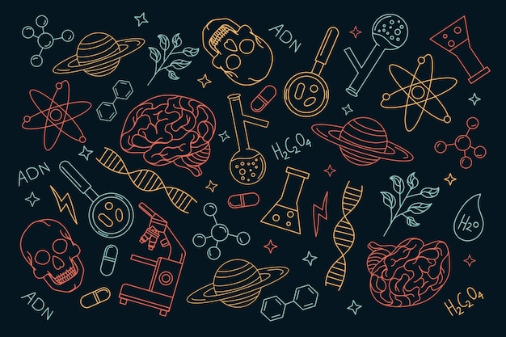

A ciência não busca verdades absolutas ou definitivas, mas sim construir conhecimento de forma crítica e baseada em evidências. O método científico é uma ferramenta que permite testar ideias, questionar resultados e corrigir erros. Por meio desse processo contínuo de investigação e revisão, a ciência avança, se adapta e se aprimora, garantindo que nosso entendimento do mundo esteja sempre aberto a novas descobertas e interpretações.

Ilustação com objetos científicos.
Como funciona?
O método científico começa com a observação atenta de um fenômeno que desperta curiosidade. Ao notar algo interessante ou inesperado, surge uma pergunta clara sobre o que está acontecendo ou por que aquilo ocorre, esse é o problema que o cientista deseja entender.
Para tentar responder a essa pergunta, o cientista cria uma hipótese, que é uma explicação provisória e testável para o problema identificado. Essa hipótese orienta a realização de experimentos cuidadosamente planejados, nos quais são coletados dados para verificar se a ideia proposta é verdadeira.
Os resultados obtidos nos experimentos são analisados com atenção para determinar se a hipótese se confirma ou se precisa ser revisada. Com base nessa análise, o cientista chega a conclusões que contribuem para o conhecimento sobre o fenômeno estudado. Caso a hipótese seja rejeitada, novas perguntas podem surgir, e o processo se reinicia, permitindo que o conhecimento avance continuamente.
Tubos de ensaio contendo líquidos azuis.
O princípio da falseabilidade
O princípio da falseabilidade, proposto pelo filósofo da ciência Karl Popper, é uma das bases que diferenciam o conhecimento científico de opiniões ou crenças pessoais. Segundo esse princípio, uma ideia só pode ser considerada científica se puder ser testada e, em teoria, refutada.
Isso significa que uma hipótese deve permitir a possibilidade de ser provada falsa caso a realidade não corresponda ao que ela propõe. Por exemplo, afirmar que "todos os metais se expandem ao serem aquecidos" é uma afirmação falseável, basta encontrar um metal que não se comporte assim para refutá-la. Já declarações vagas, como “existe uma força invisível que move tudo, mas que ninguém pode detectar”, não podem ser testadas nem refutadas, e por isso, não são científicas.
A falseabilidade não torna uma teoria “falsa”, mas mostra que ela está aberta ao questionamento, à revisão e à correção. Esse é o verdadeiro espírito da ciência: aceitar que o conhecimento está sempre em construção, e que ele pode, e deve, mudar quando surgem novas evidências.
Representação da estrutura da dupla hélice do DNA.
Revisão por pares
Depois que um cientista realiza uma pesquisa e obtém resultados, ele costuma escrever um artigo científico para contar o que descobriu. Antes desse artigo ser publicado em revistas científicas, ele passa por um processo chamado revisão por pares.
Isso significa que outros cientistas especialistas na mesma área, chamados de pares, avaliam o trabalho com cuidado. Eles verificam se a pesquisa foi feita corretamente, se os métodos usados são confiáveis, se os resultados fazem sentido e se as conclusões são válidas.
Essa revisão é muito importante porque ajuda a evitar erros, falsificações ou conclusões precipitadas. Também incentiva o cientista a melhorar seu trabalho, corrigindo pontos que podem estar faltando ou que precisam de mais detalhes.
Assim, a revisão por pares funciona como um filtro de qualidade para a ciência, garantindo que só o que foi bem pesquisado e analisado seja compartilhado com a comunidade científica e com o público.
Mão translúcida e luminosa.
Publicação e Comunicação Científica
A publicação científica é uma das etapas mais importantes do processo de construção do conhecimento. Após passar pela revisão por pares, os resultados de uma pesquisa são registrados em revistas especializadas, conhecidas como periódicos científicos. Esses periódicos garantem que o estudo fique acessível para a comunidade científica, permitindo que outros pesquisadores possam ler, reproduzir os experimentos, comparar resultados ou desenvolver novas investigações com base naquele trabalho.
Alguns periódicos são bastante reconhecidos internacionalmente, como a Nature e a Science, que divulgam descobertas de várias áreas do conhecimento, além de revistas mais específicas como The Lancet, voltada à medicina, Cell, dedicada à biologia celular, e a PNAS (Proceedings of the National Academy of Sciences), que publica estudos de impacto global.
Além das revistas, existem plataformas que facilitam o acesso a esse conhecimento, como a SciELO, que reúne artigos de revistas científicas do Brasil e da América Latina; o PubMed, voltado para a área da saúde; e o Google Acadêmico, um buscador gratuito de artigos e trabalhos científicos de diversas áreas.
Duas mulheres sentadas na cama, olhando para um laptop.
A ciência do dia a dia
A ciência está presente em praticamente tudo que fazemos, mesmo que muitas vezes nem percebamos. Desde os remédios que usamos para cuidar da nossa saúde, até a eletricidade que alimenta nossa casa e a tecnologia dos aparelhos que usamos diariamente, tudo isso é fruto de pesquisas e experimentos feitos por cientistas.
Além disso, a ciência influencia a forma como tomamos decisões no dia a dia. Quando comparamos informações, testamos novas ideias, buscamos entender causas e efeitos, estamos usando o pensamento científico. Essa forma de pensar ajuda a evitar erros, combater desinformação e encontrar soluções práticas para os problemas.
Aprender sobre ciência não é só para quem trabalha em laboratório — é uma ferramenta que pode ajudar qualquer pessoa a entender melhor o mundo, questionar o que ouve e faz escolhas mais conscientes e seguras.